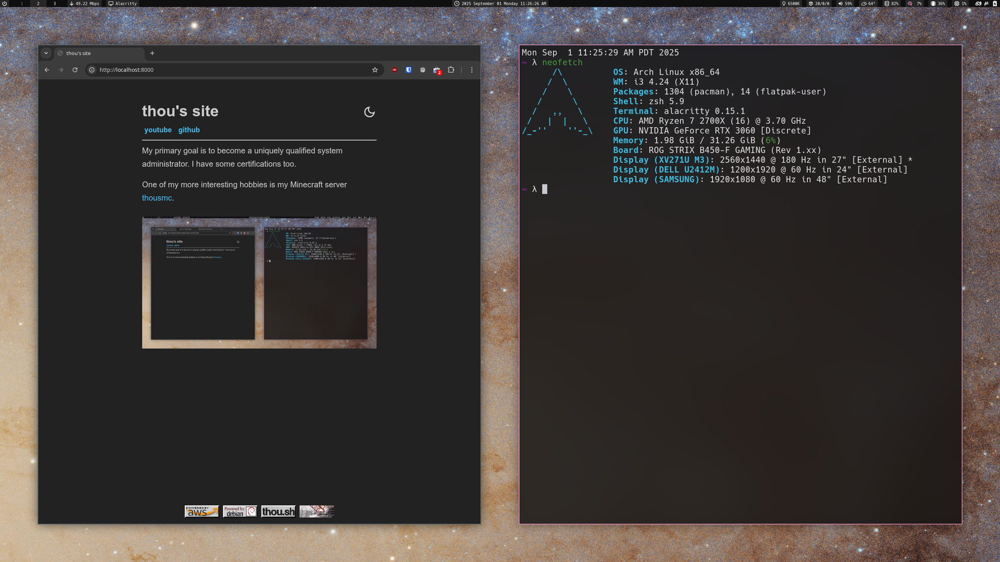

thou's site
youtube
github
My primary goal is to become a uniquely qualified system administrator. I have some certifications too.
One of my more interesting hobbies is my Minecraft server
thousmc
.
